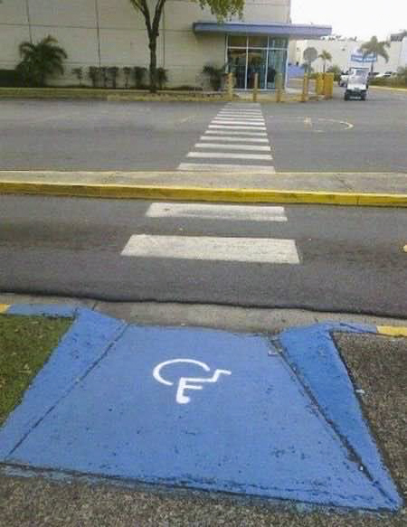

<DOCTYPE html>
<html>
	<head>
		<title>I'm Glad it's Not Raining.</title>

		<meta name="viewport" content="width=device-width, initial-scale=1, maximum-scale=1" />
  		<link rel="stylesheet" href="assets/css/main.css">
  		<link href='https://fonts.googleapis.com/css?family=Arimo' rel='stylesheet' type='text/css'>
	</head>

	<body>
		<center>
			<div class = "inline">
				
			</div>
			<a href="gnr2.html">
				<div class = "link"></div>
			</a>
		</center>
	</body>
</html>

<style type="text/css">

.link{
	position: absolute;
		top: 270px;
		left: 38%;
	
	height: 100px;
	width: 300px;
}

/* Media Queries */

@media screen and (max-width: 1024px) {

.link{
	position: absolute;
		top: 270px;
		left: 38%;
	
	height: 100px;
	width: 300px;

}
}

@media screen and (max-width: 840px) {

.link{
	position: absolute;
		top: 240px;
		left: 38%;
	
	height: 90px;
	width: 240px;
}

}

@media screen and (max-width: 768px) {

.link{
	position: absolute;
		top: 190px;
		left: 38%;
	
	height: 80px;
	width: 200px;
}

}

@media screen and (max-width: 600px) {

.link{
	position: absolute;
		top: 150px;
		left: 38%;
	
	height: 60px;
	width: 180px;
}

}

@media screen and (max-width: 480px) {

.link{
	position: absolute;
		top: 100px;
		left: 38%;
	
	height: 50px;
	width: 120px;
}

}

@media screen and (max-width: 320px) {

.link{
	position: absolute;
		top: 70px;
		left: 38%;
	
	height: 40px;
	width: 90px;
}

}

</style>